19 Kinematics of Rigid Bodies
In this chapter, we will denote the fixed basis by \(\{{\bf E}_1,{\bf E}_2,{\bf E}_3\}\).
Consider a body \(\mathcal{B}\) in motion in 3D space.
- A body \(\mathcal{B}\) is a collection of material points (mass particles or particles).
- It is convenient to define a fixed reference configuration \(\boldsymbol{\kappa}_0\) for the body.
- The present (or current) configuration of the body is denoted by \(\boldsymbol{\kappa}_t\).
- We denote a material point by \(X\). The position of the material point \(X\) relative to a fixed origin at the reference configuration is denoted by \({\bf X}\) and at time \(t\) is denoted by \({\bf x}\).
- This motion is invertible; we can use \({\bchi}\) to uniquely define the motion as a function of \(X\) and \(t\): \({\bf x} = \tilde{\bchi}(X,t) = {\bchi}({\bf X},t)\).
- \(\bchi\) (pronounced like “kye”) is called the motion function. It tells you the current position vector of the material point which, at the reference configuration, had position vector \({\bf X}\).
TipThink!
Question: What is a mathematical statement that means that a body is rigid?
NoteAnswer
For rigid bodies the distance between any two mass particles \(X_1\) and \(X_2\) remains constant for all motions: \[\begin{align} \lnorm{\bf x}_1-{\bf x}_2\rnorm = \lnorm{\bf X}_1-{\bf X}_2\rnorm. \end{align}\] The motion preserves angles between lines on the body (unlike elastic bodies or fluids) and preserves orientation (it is not a reflection).
Any rigid body motion can be built in two steps:

- Rotate the object about \(O\) until it has the desired orientation (but likely the wrong position). This motion maps every point \({\bf X}\) to an intermediate position \({\bf x}_I\): \({\bf x}_I = {\bf Q}(t){\bf X}\) with \(\lnorm{\bf Q}(t){\bf X}\rnorm = \lnorm{\bf X}\rnorm\) for all \({\bf X}\).
- Translate via the translation vector \({\bf y}(t)\) (without further rotation) from an intermediate configuration to a current configuration.
Then every rigid motion is: \[\begin{align} {\bf x} = \bchi({\bf X},t) = {\bf Q}(t){\bf X}+{\bf y}(t). \end{align}\]
\({\bf Q}(t)\) is an object that acts on a vector to produce another vector. If \({\bf Q}\) is also linear, then we call it a tensor. We will show that \({\bf Q}(t)\) is a linear map and is called the rotation tensor. Both \({\bf Q}\) and \({\bf y}\) are the same for all material points of the rigid body(functions of \(t\) only) as all material points on the rigid body are rotated and translated by the same amount.
In this class we consider bodies translating and rotatingin the plane, ie. general plane motion, where \(\bomega = \dot{\theta}{\bf E}_3\) and \(\balpha = \dot{\bomega}\). The fixed axis of rotation is \({\bf E}_3\).
TipThink!
Question: How do we know if a body has rotated relative to a reference configuration?
NoteAnswer

We need the reference configuration to define rotation. The rotation angle \(\theta\) is the angular displacement of every material line from reference to current configuration. The axis of rotation is perpendicular to the page.
19.1 Corotational Bases
A corotational basis \(\{{\bf e}_1,{\bf e}_2\}\) is a pair of vectors embedded in the material. Initially \({\bf e}_i = {\bf E}_i\).

For a rigid body, the components of a material vector \({\bf v}\) along the corotational basis are constant throughout the motion: \[\begin{align} {\bf x} = x_1{\bf e}_1+x_2{\bf e}_2, \end{align}\] where \(x_1\) and \(x_2\) are constant and \({\bf e}_1(t)\), \({\bf e}_2(t)\) evolve with the body. Since initially \({\bf e}_1 = {\bf E}_1\) and \({\bf e}_2 = {\bf E}_2\), we can write \({\bf x}(t=0) = x_1{\bf E}_1+x_2{\bf E}_2\).The corotational basis is unaffected by translation.
19.2 Tensors
A tensor \({\bf T}\) is a linear transformation that transforms a vector into another vector: \({\bf T}{\bf u} = {\bf v}\). A tensor exists independent of any basis and is defined by its action on vectors.
Examples:
A rotation tensor \({\bf Q}\) acting on some vector \({\bf v}\) returns a vector \({\bf u}\) that is a rotation of \({\bf v}\) by some angle \(\theta\).
The identity tensor \({\bf I}\) acting on any vector \({\bf v}\) returns the same vector \({\bf v}\).
A scaling tensor \({\bf S}\) acting on some vector \({\bf v}\) returns another the scaled vector \(k{\bf v}\).
TipThink!
Question: Is a rotation a linear transformation?
NoteAnswer
Yes. To be a linear transformation, a rotation would have to satisfy two rules:
Rotating \(a{\bf X}\) is the same as rotating \({\bf X}\) and then scaling by \(a\).
Rotating \({\bf X}_1\) and \({\bf X}_2\) is the same as rotating \({\bf X}_1\), rotating \({\bf X}_2\), and then adding the results together.
Since both of these propositions are true for rotations, we conclude that rotations are linear transformations. Thus, rotations are tensors.
TipThink!
Question: Are tensors and matrices the same?
NoteAnswer
We can answer this question using an analogous one: are vectors and arrays the same?
No. A vector is an abstract object independent of any basis; an array is its representation in a specific basis. Similarly, a tensor is not a matrix, but can be expressed as one in a given coordinate system.
We can represent a vector as an array of numbers if we have chosen a basis or coordinate system, but a vector is an abstract object that exists independent of any basis.
Consider for example a position vector \({\bf r}\) to a particle \(P\). This vector encodes the position of \(P\) relative to the origin (distance and direction) independent of any basis. We could however express this vector in the Cartesian basis as \(x{\bf E}_x+y{\bf E}_y+z{\bf E}_z\). In this basis, we could write the array \([x,y,z]\) to represent this vector.
Analogously, a tensor is not a matrix, but a tensor can be expressed as a matrix in a given coordinate system.
19.3 Tensor (Bun) Product
Consider the mathematical object, termed the tensor product of two vectors: \[\begin{align} {\bf a}\otimes{\bf b}, \end{align}\] where \({\bf a}\) and \({\bf b}\) are vectors. This object is defined to act on vectors to produce a vector as follows: \[\begin{align} \lp {\bf a}\otimes{\bf b} \rp{\bf u} = \lp {\bf b}\cdot{\bf u}\rp{\bf v}. \end{align}\] If this object is also linear, then it is a tensor. To verify that this object is linear, we need to show that \[\begin{align} &\lp {\bf a}\otimes{\bf b}\rp({\bf u}+{\bf v}) = \lp{\bf a}\otimes{\bf b}\rp{\bf u}+\lp{\bf a}\otimes{\bf b}\rp{\bf v},\\ &\lp {\bf a}\otimes{\bf b}\rp(k{\bf u}) = k(\lp{\bf a}\otimes{\bf b}\rp{\bf u}). \end{align}\]
For the first, \[\begin{align*} \lp {\bf a}\otimes{\bf b}\rp({\bf u}+{\bf v}) &= \lp({\bf u}+{\bf v})\cdot{\bf b}\rp{\bf a} = {\bf u}\cdot{\bf b}{\bf a}+{\bf v}\cdot{\bf b}{\bf a} = \lp{\bf a}\otimes{\bf b}\rp{\bf u}+\lp{\bf a}\otimes{\bf b}\rp{\bf v}. \end{align*}\] For the second, \[\begin{align} \lp{\bf a}\otimes{\bf b}\rp(k{\bf u}) &= (k{\bf u})\cdot{\bf b}{\bf a} = k({\bf u}\cdot{\bf b}{\bf a}) = k(\lp{\bf a}\otimes{\bf b}\rp{\bf u}). \end{align}\]
TipThink!
Question: What does \(2{\bf E}_1\otimes{\bf E}_1+2{\bf E}_2\otimes{\bf E}_2+2{\bf E}_3\otimes{\bf E}_3\) do to a vector?
NoteAnswer
It scales it by a factor of two.
TipThink!
Question: Show that the identity tensor may be written as \({\bf E}_1\otimes{\bf E}_1+{\bf E}_2\otimes{\bf E}_2+{\bf E}_3\otimes{\bf E}_3\).
NoteAnswer
Apply the definition of the tensor product term by term on a vector.
TipThink!
Question: Show that the rotation tensor \({\bf Q}\) can be expressed as \({\bf Q} = {\bf e}_x\otimes{\bf E}_x+{\bf e}_y\otimes{\bf E}_y+{\bf e}_z\otimes{\bf E}_z\). In other words, show that \(\lp {\bf e}_x\otimes{\bf E}_x+{\bf e}_y\otimes{\bf E}_y+{\bf e}_z\otimes{\bf E}_z\rp\lp{\bf X}_A-{\bf X}_B\rp = {\bf x}_A-{\bf x}_B\) where \({\bf X}_A-{\bf X}_B = a{\bf E}_x+b{\bf E}_y\) and \({\bf x}_A-{\bf x}_B = a{\bf e}_x+b{\bf e}_y\).
NoteAnswer
…
19.4 Matrix Representation of Tensors
Given a basis \(\{{\bf e}_1,{\bf e}_2,{\bf e}_3\}\), any tensor \({\bf Q}\) can be written as a sum of dyads (tensor products) on that basis: \[\begin{align} {\bf Q} = \sum_{k=1}^3\sum_{\ell=1}^3 Q_{k\ell}\,{\bf e}_k\otimes{\bf e}_\ell. \end{align}\] There are two equivalent perspectives for arriving at the matrix representation of \({\bf Q}\), and both lead to the same components \(Q_{ij}\).
19.4.1 Perspective 1: From the Dyadic Expansion
Acting with \({\bf Q}\) on a basis vector \({\bf e}_j\) and using \({\bf e}_\ell\cdot{\bf e}_j = 1\) if \(\ell=j\) and \(0\) otherwise: \[\begin{align} {\bf Q}{\bf e}_j = \lp\sum_{k=1}^3\sum_{\ell=1}^3 Q_{k\ell}\,{\bf e}_k\otimes{\bf e}_\ell\rp{\bf e}_j = \sum_{k=1}^3\sum_{\ell=1}^3 Q_{k\ell}\lp{\bf e}_\ell\cdot{\bf e}_j\rp{\bf e}_k = \sum_{k=1}^3 Q_{kj}\,{\bf e}_k. \end{align}\] Taking the dot product with \({\bf e}_i\): \[\begin{align} \lp{\bf Q}{\bf e}_j\rp\cdot{\bf e}_i = \sum_{k=1}^3 Q_{kj}\lp{\bf e}_k\cdot{\bf e}_i\rp = Q_{ij}. \end{align}\] So the coefficient \(Q_{ij}\) in the dyadic expansion of \({\bf Q}\) is exactly the matrix entry in row \(i\), column \(j\).
19.4.2 Perspective 2: From the Action on a General Vector
Given a basis \(\{{\bf e}_1,{\bf e}_2,{\bf e}_3\}\), every vector \({\bf X}\) can be written uniquely as \({\bf X} = X_1{\bf e}_1+X_2{\bf e}_2+X_3{\bf e}_3\) with components \(X_i = {\bf X}\cdot{\bf e}_i\). By linearity of \({\bf Q}\): \[\begin{align} {\bf Q}{\bf X} = X_1({\bf Q}{\bf e}_1)+X_2({\bf Q}{\bf e}_2)+X_3({\bf Q}{\bf e}_3). \end{align}\] Writing the output vector \({\bf x}\equiv{\bf Q}{\bf X}\) in the same basis, \({\bf x} = x_1{\bf e}_1+x_2{\bf e}_2+x_3{\bf e}_3\) with \(x_i = {\bf x}\cdot{\bf e}_i = ({\bf Q}{\bf X})\cdot{\bf e}_i\), and defining \[\begin{align} Q_{ij} \equiv \lp{\bf Q}{\bf e}_j\rp\cdot{\bf e}_i, \end{align}\] we get \[\begin{align} x_1 &= Q_{11}X_1+Q_{12}X_2+Q_{13}X_3,\\ x_2 &= Q_{21}X_1+Q_{22}X_2+Q_{23}X_3,\\ x_3 &= Q_{31}X_1+Q_{32}X_2+Q_{33}X_3, \end{align}\] which is exactly the matrix equation \[\begin{align} \begin{bmatrix}x_1\\x_2\\x_3\end{bmatrix} = \begin{bmatrix}Q_{11}&Q_{12}&Q_{13}\\Q_{21}&Q_{22}&Q_{23}\\Q_{31}&Q_{32}&Q_{33}\end{bmatrix} \begin{bmatrix}X_1\\X_2\\X_3\end{bmatrix}. \end{align}\]
ImportantNote!
Both perspectives agree on the same definition \(Q_{ij}=\lp{\bf Q}{\bf e}_j\rp\cdot{\bf e}_i\). Perspective 1 identifies \(Q_{ij}\) as the coefficient of \({\bf e}_i\otimes{\bf e}_j\) in the dyadic expansion of \({\bf Q}\) itself; Perspective 2 identifies it as the entry that makes ordinary matrix-vector multiplication reproduce the action of \({\bf Q}\) on components. The matrix representation depends on the chosen basis, but the tensor itself is basis-independent. Transpose, symmetry, and skew-symmetry of a tensor can be defined without reference to any basis, but in practice we identify them through the matrix representation: \({\bf T}\) is symmetric if \([{\bf T}]=[{\bf T}]^T\) and skew if \([{\bf T}]=-[{\bf T}]^T\).
19.4.3 Rigid Body Motion
In matrix form, rigid body motion is: \[\begin{align} \begin{bmatrix}x_1\\x_2\\x_3\end{bmatrix} = \begin{bmatrix}Q_{11}(t)&Q_{12}(t)&Q_{13}(t)\\Q_{21}(t)&Q_{22}(t)&Q_{23}(t)\\Q_{31}(t)&Q_{32}(t)&Q_{33}(t)\end{bmatrix} \begin{bmatrix}X_1\\X_2\\X_3\end{bmatrix} + \begin{bmatrix}y_1\\y_2\\y_3\end{bmatrix}. \end{align}\] For \([{\bf Q}(t)]\) to be a rotation matrix: \({\bf Q}{\bf Q}^T = {\bf I}\) and \(\det([{\bf Q}]) = 1\).
TipThink!
Question: Verify that the matrix representation of the rotation tensor \({\bf Q}\) of a rotation about \({\bf E}_z\) is \[\begin{align*} \mathtt{Q} = \begin{bmatrix}\cos\theta & -\sin\theta & 0\\\sin\theta & \cos\theta & 0\\0 & 0 & 1\end{bmatrix} \end{align*}\] where \(\theta\) is a function of \(t\). Recall that the rotation tensor can be expressed as \[\begin{align*} {\bf Q} = {\bf e}_1\otimes{\bf E}_1+{\bf e}_2\otimes{\bf E}_2+{\bf e}_3\otimes{\bf E}_3, \end{align*}\] and for a rotation about \({\bf E}_3\), we have \[\begin{align*} {\bf e}_1 &= \cos(\theta){\bf E}_1+\sin(\theta){\bf E}_2,\\ {\bf e}_2 &= -\sin(\theta){\bf E}_1+\cos(\theta){\bf E}_2. \end{align*}\]
NoteAnswer
Compute \(Q_{ij} = \lp{\bf Q}{\bf E}_j\rp\cdot{\bf E}_i = {\bf e}_j\cdot{\bf E}_i\) to recover the matrix.
TipThink!
Question: A tensor has the following matrix representation on \(\{{\bf E}_1,{\bf E}_2,{\bf E}_3\}\). What does this rotation matrix do to a vector?
\[\begin{align*} \mathtt{Q} = \begin{bmatrix} \cos(\theta) & -\sin(\theta) & 0\\ \sin(\theta) & \cos(\theta) & 0\\ 0 & 0 & 1 \end{bmatrix} \end{align*}\]
NoteAnswer
It rotates vector anti-clockwise by \(\theta = t\) in the \(xy-\)plane.
Check this a few examples: \[\begin{align*} \begin{bmatrix} \cos(t) & -\sin(t) & 0\\ \sin(t) & \cos(t) & 0\\ 0 & 0 & 1 \end{bmatrix} \begin{bmatrix} 1\\ 0\\ 0 \end{bmatrix} = \begin{bmatrix} \cos(t)\\ \sin(t)\\ 0 \end{bmatrix} \end{align*}\] \[\begin{align*} \begin{bmatrix} \cos(t) & -\sin(t) & 0\\ \sin(t) & \cos(t) & 0\\ 0 & 0 & 1 \end{bmatrix} \begin{bmatrix} 0\\ 1\\ 0 \end{bmatrix} = \begin{bmatrix} -\sin(t)\\ \cos(t)\\ 0 \end{bmatrix} \end{align*}\] \[\begin{align*} \begin{bmatrix} \cos(t) & -\sin(t) & 0\\ \sin(t) & \cos(t) & 0\\ 0 & 0 & 1 \end{bmatrix} \begin{bmatrix} 0\\ 0\\ 1 \end{bmatrix} = \begin{bmatrix} 0\\ 0\\ 1 \end{bmatrix} \end{align*}\] In general, this matrix is a rotation matrix that rotates vectors \(\theta(t)\) radians anti-clockwise about \({\bf e}_z\).
ImportantNote!
This matrix satisfies \(\mathtt{Q}\mathtt{Q}^T = \mathtt{I}\) and \(\det(\mathtt{Q})=1\), so \({\bf Q}\) is a proper orthogonal tensor. It can be shown that all proper orthogonal tensors are rotations and vice versa.
19.5 The Angular Velocity Vector
From rigid body motion, for any two material points \(A\) and \(B\): \[\begin{align} {\bf x}_A &= {\bf Q}{\bf X}_A+{\bf q},\\ {\bf x}_B &= {\bf Q}{\bf X}_B+{\bf q}. \end{align}\] Thus, \(({\bf x}_B-{\bf x}_A) = {\bf Q}({\bf X}_B-{\bf X}_A)\). Differentiating: \[\begin{align} {\bf v}_B-{\bf v}_A =\dot{\bf Q}({\bf X}_B-{\bf X}_A) = \dot{\bf Q}{\bf Q}^T({\bf x}_B-{\bf x}_A). \end{align}\] The taking the derivative of \({\bf Q}{\bf Q}^T={\bf I}\), we show that \(\dot{\bf Q}{\bf Q}^T\) is a skew tensor. \[\begin{align} & \frac{d}{dt}({\bf Q}{\bf Q}^T) = {\bf 0} = \dot{\bf Q}{\bf Q}^T+{\bf Q}\dot{\bf Q}^T,\\ & \dot{\bf Q}{\bf Q}^T = -{\bf Q}\dot{\bf Q}^T = -(\dot{\bf Q}{\bf Q}^T)^T. \end{align}\]
ImportantNote!
Every skew tensor corresponds to a vector cross product. In the Cartesian basis, if \({\bf a} = a_1{\bf E}_1+a_2{\bf E}_2+a_3{\bf E}_3\) and \({\bf b} = b_1{\bf E}_1+b_2{\bf E}_2+b_3{\bf E}_3\), then \({\bf a}\times{\bf b}\) has the matrix representation \[\begin{align} [{\bf a}\times{\bf b}] = \underbrace{\begin{bmatrix}0&-a_3&a_2\\a_3&0&-a_1\\-a_2&a_1&0\end{bmatrix}}_{[{\bf a}]_\times}\begin{bmatrix}b_1\\b_2\\b_3\end{bmatrix}. \end{align}\] The skew matrix \([{\bf a}]_\times\) built from the components of \({\bf a}\) is the matrix representation of the skew tensor whose axial vector is \({\bf a}\). Applying this to \(\dot{\bf Q}{\bf Q}^T\) identifies its axial vector as \(\bomega\), so:
\[\begin{align} {\bf v}_B-{\bf v}_A = \bomega\times({\bf x}_B-{\bf x}_A). \end{align}\] The tensor \(\bOmega = \dot{\bf Q}{\bf Q}^T\) is the angular velocity tensor and \(\bomega\) is the angular velocity vector. Taking another derivative: \[\begin{align} {\bf a}_B-{\bf a}_A = \balpha\times({\bf x}_B-{\bf x}_A)+\bomega\times(\bomega\times({\bf x}_B-{\bf x}_A)) \end{align}\] where \(\balpha\) is the angular acceleration.
ImportantNote!
For any corotational basis vector \({\bf e}_i\) fixed to the rigid body: \[\begin{align} \dot{\bf e}_i = \bomega\times{\bf e}_i, \quad i=1,2,3. \end{align}\]
19.6 Velocity and Acceleration of Two Material Points
Let \(A\) and \(B\) be material points on the rigid body. Expressing \({\bf x}_{B/A}\) on a corotational basis (constant components): \[\begin{align} {\bf x}_{B/A} &= x{\bf e}_x+y{\bf e}_y,\\ {\bf v}_{B/A} &= x\dot{\bf e}_x+y\dot{\bf e}_y = \bomega\times{\bf x}_{B/A},\\ {\bf a}_{B/A} &= \balpha\times{\bf x}_{B/A}+\bomega\times(\bomega\times{\bf x}_{B/A}). \end{align}\] With \(\bomega = \omega{\bf E}_z\) and \(\balpha = \alpha{\bf E}_z\): \[\begin{align} \omega\,d\omega = \alpha\,d\theta, \qquad \omega\,dt = d\theta, \qquad \alpha\,dt = d\omega. \end{align}\]
ImportantNote!
The anglar velocity and angular acceleration are properties of the rigid bodies. All material lines on the RB rotate with the same angular velocity and angular acceleration.
19.7 Particle in a Noninertial Frame
A noninertial frame is one that accelerates (e.g. an accelerating bus, a merry-go-round).
Consider two points: \(A\) is a material point of a rigid body and \(B\) moves relative to it, then \[\begin{align} {\bf x}_B-{\bf x}_A &= x{\bf e}_x+y{\bf e}_y,\\ {\bf v}_B-{\bf v}_A &= \bomega\times({\bf x}_B-{\bf x}_A)+\overset{\circ}{\bf x}_{B/A},\\ {\bf a}_B-{\bf a}_A &= \balpha\times({\bf x}_B-{\bf x}_A)+\bomega\times\lp\bomega\times\lp{\bf x}_B-{\bf x}_A\rp\rp+2\bomega\times\overset{\circ}{\bf x}_{B/A}+\overset{\circ\circ}{\bf x}_{B/A}, \end{align}\] where \(\overset{\circ}{\bf x}_{B/A} = \dot{x}{\bf e}_x+\dot{y}{\bf e}_y\) and \(\overset{\circ\circ}{\bf x}_{B/A} = \ddot{x}{\bf e}_x+\ddot{y}{\bf e}_y\) are the first and second corotational rates. These are the velocity and acceleration of \(B\) with respect to \(A\) as observed from the noninertial frame (ie. an observer fixed to the rigid body). The term \(2\bomega\times\overset{\circ}{\bf x}_{B/A}\) is the Coriolis acceleration and \(\bomega\times(\bomega\times{\bf x}_{B/A})\) is the centripetal acceleration.
ImportantNote!
Consider a particle \(B\) whose motion is described by a noninertial frame with origin \(A\), angular velocity \(\bomega\) and angular acceleration \(\balpha\). In an inertial frame, the balance of linear momentum for particle \(B\) applies: \[\begin{align} {\bf F} &= m{\bf a}_B,\\ {\bf F} &= m\left({\bf a}_A+\balpha\times({\bf x}_B-{\bf x}_A)+\bomega\times\lp\bomega\times\lp{\bf x}_B-{\bf x}_A\rp\rp+2\bomega\times\overset{\circ}{\bf x}_{B/A}+\overset{\circ\circ}{\bf x}_{B/A}\right),\\ {\bf F}-m\left({\bf a}_A+\balpha\times({\bf x}_B-{\bf x}_A)+\bomega\times\lp\bomega\times\lp{\bf x}_B-{\bf x}_A\rp\rp+2\bomega\times\overset{\circ}{\bf x}_{B/A}\right) &= m\overset{\circ\circ}{\bf x}_{B/A} \end{align}\]. The balance of linear momentum for particle \(B\) in the noninertial frame is the same as in an inertial frame, except that the fictitious forces \(-m\left({\bf a}_A+\balpha\times({\bf x}_B-{\bf x}_A)+\bomega\times\lp\bomega\times\lp{\bf x}_B-{\bf x}_A\rp\rp+2\bomega\times\overset{\circ}{\bf x}_{B/A}\right)\) must be included.
TipThink!
Question: Watch the below video of people playing catch on a merry-go-round. A ball is thrown on a merry-go-round rotating about fixed center \(O\), with \({\bf r}_0 = -R{\bf E}_x\) and \({\bf v}_0 = v_0{\bf E}_x\). The merry-go-round has an angular velocity \(\bomega\) and an angular acceleration \(\balpha\). What are the velocity and acceleration of the ball that is appears to have with respect to an observer on the merry-go-round?
NoteAnswer
The ball \(P\) is a projectile so its absolute acceleration, velocity and position vectors are respectively \[\begin{align} {\bf a} &= -g{\bf E}_z,\\ {\bf v} &= -gt{\bf E}_z+{\bf v}_0,\\ {\bf r} &= -\frac{g}{2}t^2+{\bf v}_0t+{\bf r}_0. \end{align}\] Conducting a velocity analysis between the ball and the origin \(O\), we get \[\begin{align} {\bf v} = \bomega\times({\bf r}-{\bf r}_0)+\overset{\circ}{\bf x}_{P/O}. \end{align}\] The relative velocity being the only unknown in this equation, we can solve for it: \[\begin{align} \overset{\circ}{\bf x}_{P/O} = -gt{\bf E}_z+v_0{\bf E}_x+\omega(v_0t{\bf E}_y-R{\bf E}_y). \end{align}\]
Another example of this observed in the Foucault pendulum, where the plane of oscillation of the pendulum appears to rotate with respect to the Earth. The Coriolis effect is responsible for this apparent rotation.
19.8 Classifications of Rigid Body Motions
Pure (rectilinear) translation: \(\bomega = {\bf 0}\), \(\balpha = {\bf 0}\).
Curvilinear translation: material points follow parallel curved paths; \(\bomega = {\bf 0}\), \(\balpha = {\bf 0}\) (e.g. Ferris wheel bucket).
Fixed point rotation: \(\bomega \neq {\bf 0}\), fixed point with \({\bf v}_O = {\bf a}_O = {\bf 0}\) (e.g. pendulum): \[\begin{align} {\bf a}_P = \balpha\times{\bf r}_P+\bomega\times(\bomega\times{\bf r}_P). \end{align}\] The term \(\balpha\times{\bf r}_P\) is the tangential acceleration; \(\bomega\times(\bomega\times{\bf r}_P)\) is the centripetal acceleration.
General motion: combined translation and rotation.
19.9 Instantaneous Center of Rotation
TipThink!
Question: Draw the velocity profile of a rotating link with a fixed end.
NoteAnswer

TipThink!
Question: Draw the velocity profile of a sphere rotating about its fixed center, or of a random rigid body in fixed point rotation.
NoteAnswer
…
A body in general plane motion is not rotating about a fixed point, but instantaneously it rotates about the instantaneous center of rotation (IC) — a point with zero velocity at that instant. If \({\bf v}_{IC} = {\bf 0}\), then for any material point \(A\): \[\begin{align} {\bf v}_A = \bomega\times({\bf r}_A-{\bf r}_{IC}). \end{align}\] So \({\bf r}_{A/IC}\) is perpendicular to \({\bf v}_A\). Knowing the directions of \({\bf v}_A\) and \({\bf v}_B\) for two material points identifies the IC.

For the IC: \[\begin{align} {\bf v}_P = \bomega\times{\bf r}_{P/IC}. \end{align}\]
ImportantNote!
The IC of a RB does not have to be on the RB itself, however, the IC behaves like a material point of the RB. One could consider a massless extension of the RB which containts the IC.
The IC can only be used for velocity analysis since its acceleration is nonzero.
The IC generally migrates through space.
For a translating rigid body the IC is at infinity.
19.10 Kinematics of Rolling and Sliding
ImportantNote!
Terminology: “rolling” = roll without slip; “sliding” = roll with slip.
Consider a rigid body \(\mathcal{B}\) in contact with a fixed surface \(\mathcal{S}\). Let \(P\) be the material point of \(\mathcal{B}\) in contact at time \(t\), with unit normal \({\bf n}\) to \(\mathcal{S}\).
Since \(P\) belongs to \(\mathcal{B}\): \[\begin{align} {\bf v}_P-{\bf v}_C &= \bomega\times({\bf r}_P-{\bf r}_C),\\ {\bf a}_P-{\bf a}_C &= \balpha\times({\bf r}_P-{\bf r}_C)+\bomega\times\lp\bomega\times({\bf r}_P-{\bf r}_C)\rp. \end{align}\]
- Contact (touching): \({\bf v}_P\cdot{\bf n} = 0\).
- Rolling (no slip): \({\bf v}_P = {\bf 0}\), so \({\bf v}_C = -\bomega\times({\bf r}_P-{\bf r}_C)\). Note: \({\bf a}_P \neq {\bf 0}\) in general.
19.10.1 Example: Rolling Circular Disk
TipThink!
Question: What is the IC of a rolling disk?
NoteAnswer
The contact point with the surface.
TipThink!
Question: Draw the velocity profile of a wheel that is rolling without slipping on a road.
NoteAnswer
…

Consider an upright homogeneous disk of radius \(R\) rolling on a plane, with angular velocity \(\bomega=\omega{\bf E}_z\) and angular acceleration \(\balpha=\alpha{\bf E}_z\). The center of mass \(C\) moves in rectilinear motion: \[\begin{align} {\bf r}_C = x{\bf E}_x+c{\bf E}_y, \qquad {\bf v}_C = \dot{x}{\bf E}_x, \qquad {\bf a}_C = \ddot{x}{\bf E}_x. \end{align}\] Define a corotational basis for the disk: \[\begin{align} {\bf e}_x = \cos(\theta){\bf E}_x+\sin(\theta){\bf E}_y, \qquad {\bf e}_y = \cos(\theta){\bf E}_y-\sin(\theta){\bf E}_x, \qquad {\bf e}_z = {\bf E}_z. \end{align}\] Since the disk is rolling without slipping, \({\bf v}_P={\bf 0}\). Then, using the two-point velocity relation between \(C\) and \(P\): \[\begin{align} {\bf v}_C-{\bf v}_P = {\bf v}_C = \dot{x}{\bf E}_x = \bomega\times({\bf r}_C-{\bf r}_P) = \omega{\bf E}_z\times R{\bf E}_y = -\omega R{\bf E}_x, \end{align}\] so that \[\begin{align} \dot{x} = -\omega R. \end{align}\] Differentiating this result with respect to time gives \[\begin{align} \ddot{x} = -\alpha R. \end{align}\] Substituting this result into the two-point acceleration relation between \(C\) and \(P\), \[\begin{align} {\bf a}_C-{\bf a}_P &= \balpha\times({\bf r}_C-{\bf r}_P)+\bomega\times({\bf v}_C-{\bf v}_P),\\ -R\alpha{\bf E}_x-{\bf a}_P &= -\alpha R{\bf E}_x-\omega^2 R{\bf E}_y,\\ {\bf a}_P &= -\omega^2 R{\bf E}_y. \end{align}\] Thus, the acceleration of the contact point \(P\) is purely vertical (toward the center).
19.11 Center of Mass
The center of mass \(C\) of \(\mathcal{B}\) has position vector \[\begin{align} {\bf r}_C = \frac{\int_{\mathcal{B}}{\bf r}\,dm}{\int_{\mathcal{B}}dm}, \qquad dm = \rho(x,t)\,dv. \end{align}\] For rigid bodies, \(C\) behaves as a material point: \[\begin{align} {\bf v}_C-{\bf v}_A = \bomega\times({\bf r}_C-{\bf r}_A), \qquad {\bf a}_C-{\bf a}_A = \balpha\times({\bf r}_C-{\bf r}_A)+\bomega\times\lp\bomega\times({\bf r}_C-{\bf r}_A)\rp. \end{align}\]
19.12 Linear Momentum
By definition, the linear momentum \({\bf G}\) of a body is the sum of the linear momenta of its constituents: \[\begin{align} {\bf G} = \int_{\mathcal{B}}{\bf v}\,dm. \end{align}\] Equivalently, \[\begin{align} {\bf G} = \int_{\mathcal{B}}{\bf v}\,dm = \int_{\mathcal{B}}\frac{d{\bf r}}{dt}\,dm = \frac{d}{dt}\left(\int_{\mathcal{B}}{\bf r}\,dm\right) = \frac{d}{dt}(m{\bf r}_C) = m{\bf v}_C. \end{align}\]
19.13 Angular Momenta
The angular momentum of a system relative to any point \(P\) is \[\begin{align} {\bf H}^P = \int_{\mathcal{B}}({\bf r}-{\bf r}_P)\times{\bf v}\,dm. \end{align}\] For \(P\) being the center of mass \(C\) and the fixed origin \(O\), respectively, we have \[\begin{align} {\bf H}^C = \int_{\mathcal{B}}({\bf r}-{\bf r}_C)\times{\bf v}\,dm, \qquad {\bf H}^O = \int_{\mathcal{B}}{\bf r}\times{\bf v}\,dm. \end{align}\] \({\bf H}^P\) and \({\bf H}^C\) are related through \[\begin{align} {\bf H}^P = {\bf H}^C+({\bf r}_C-{\bf r}_P)\times{\bf G}. \end{align}\] For the special case that \(P\) is the origin \(O\), this gives \[\begin{align} {\bf H}^O = {\bf H}^C+{\bf r}_C\times{\bf G}. \end{align}\] In other words, the angular momentum of a rigid body relative to a fixed point \(O\) is the sum of the angular momentum of the rigid body about its center of mass and the angular momentum of its center of mass relative to \(O\).
19.13.1 Inertia Tensor
Recall that for any material point on the body, its velocity \({\bf v}\) is \[\begin{align} {\bf v}-{\bf v}_C = \bomega\times({\bf r}-{\bf r}_C). \end{align}\] Define \(\bpi = {\bf r}-{\bf r}_C = x{\bf e}_x+y{\bf e}_y+z{\bf e}_z\). Then, \[\begin{align} {\bf H}^C &= \int_{\mathcal{B}}({\bf r}-{\bf r}_C)\times{\bf v}\,dm\\ &= \int_{\mathcal{B}}({\bf r}-{\bf r}_C)\times({\bf v}_C+\bomega\times({\bf r}-{\bf r}_C))\,dm\\ &= \int_{\mathcal{B}}\bpi\times({\bf v}_C+\bomega\times\bpi)\,dm\\ &= \int_{\mathcal{B}}\bpi\times{\bf v}_C\,dm+\int_{\mathcal{B}}\bpi\times(\bomega\times\bpi)\,dm. \end{align}\] The first integral vanishes (since \(\int_{\mathcal{B}}\bpi\,dm={\bf 0}\)), and applying the BAC-CAB identity to the second gives \[\begin{align} {\bf H}^C = \int_{\mathcal{B}}\lp(\bpi\cdot\bpi)\bomega-(\bpi\cdot\bomega)\bpi\rp dm = {\bf I}^C\bomega. \end{align}\] Substituting \(\bpi = x{\bf e}_x+y{\bf e}_y+z{\bf e}_z\) and \(\bomega=\omega_x{\bf e}_x+\omega_y{\bf e}_y+\omega_z{\bf e}_z\) and expanding component by component, \[\begin{align} {\bf H}^C = (I^C_{xx}\omega_x+I^C_{xy}\omega_y+I^C_{xz}\omega_z){\bf e}_x+(I^C_{xy}\omega_x+I^C_{yy}\omega_y+I^C_{yz}\omega_z){\bf e}_y+(I^C_{xz}\omega_x+I^C_{yz}\omega_y+I^C_{zz}\omega_z){\bf e}_z, \end{align}\] or, in matrix-vector form, \[\begin{align} \begin{bmatrix}{\bf H}^C\cdot{\bf e}_x\\{\bf H}^C\cdot{\bf e}_y\\{\bf H}^C\cdot{\bf e}_z\end{bmatrix} = \begin{bmatrix}I^C_{xx}&I^C_{xy}&I^C_{xz}\\I^C_{xy}&I^C_{yy}&I^C_{yz}\\I^C_{xz}&I^C_{yz}&I^C_{zz}\end{bmatrix} \begin{bmatrix}\bomega\cdot{\bf e}_x\\\bomega\cdot{\bf e}_y\\\bomega\cdot{\bf e}_z\end{bmatrix}. \end{align}\] The inertia matrix on the corotational basis: \[\begin{align} [{\bf I}^C] = \begin{bmatrix} I^C_{xx} & I^C_{xy} & I^C_{xz}\\ I^C_{xy} & I^C_{yy} & I^C_{yz}\\ I^C_{xz} & I^C_{yz} & I^C_{zz} \end{bmatrix}, \end{align}\] with diagonal entries (moments of inertia) and off-diagonal entries (products of inertia): \[\begin{align} I^C_{xx} &= \int_{\mathcal{B}}(y^2+z^2)\,dm, \qquad I^C_{yy} = \int_{\mathcal{B}}(x^2+z^2)\,dm, \qquad I^C_{zz} = \int_{\mathcal{B}}(x^2+y^2)\,dm,\\ I^C_{xy} &= -\int_{\mathcal{B}}xy\,dm, \qquad I^C_{xz} = -\int_{\mathcal{B}}xz\,dm, \qquad I^C_{yz} = -\int_{\mathcal{B}}yz\,dm. \end{align}\] When \(\{{\bf e}_x,{\bf e}_y,{\bf e}_z\}\) is an eigenbasis of \([{\bf I}^C]\), the products of inertia vanish.
ImportantNote!
Some texts (e.g. MKB) instead define \(I^C_{xy}=\int_{\mathcal{B}}xy\,dm\) (without the minus sign); with that convention the off-diagonal entries of the inertia matrix above must be negated to match.
Using tensors, the same result can be written \[\begin{align} {\bf H}^C &= \int_{\mathcal{B}}\lp(\bpi\cdot\bpi)\bomega-(\bpi\cdot\bomega)\bpi\rp dm\\ &= \int_{\mathcal{B}}\lp\bpi\cdot\bpi\,{\bf I}-\bpi\otimes\bpi\rp dm\,\bomega\\ &= {\bf I}^C\bomega, \end{align}\] where \({\bf I}^C\) is the inertia tensor of the rigid body about its center of mass \(C\). To find the matrix components of the inertia tensor, first simplify \[\begin{align} \bpi\cdot\bpi\,{\bf I} &= (x^2+y^2+z^2)({\bf e}_x\otimes{\bf e}_x+{\bf e}_y\otimes{\bf e}_y+{\bf e}_z\otimes{\bf e}_z),\\ \bpi\otimes\bpi &= x^2{\bf e}_x\otimes{\bf e}_x+xy{\bf e}_x\otimes{\bf e}_y+xz{\bf e}_x\otimes{\bf e}_z+yx{\bf e}_y\otimes{\bf e}_x+y^2{\bf e}_y\otimes{\bf e}_y+yz{\bf e}_y\otimes{\bf e}_z+zx{\bf e}_z\otimes{\bf e}_x+zy{\bf e}_z\otimes{\bf e}_y+z^2{\bf e}_z\otimes{\bf e}_z. \end{align}\] Combining these two results and writing the inertia tensor in matrix form recovers \[\begin{align} [{\bf I}^C] = \begin{bmatrix}I^C_{xx}&I^C_{xy}&I^C_{xz}\\I^C_{xy}&I^C_{yy}&I^C_{yz}\\I^C_{xz}&I^C_{yz}&I^C_{zz}\end{bmatrix}, \end{align}\] with the same component formulas given above.
The moments of inertia are a measure of the mass distribution of a rigid body about the axes of rotation. The greater the moment of inertia, the more difficult it is to change the angular velocity of the rigid body about that axis.
TipThink!
Question: Is my moment of inertia about an axis through my body greater when my arms are closed or open?
NoteAnswer
Greater when arms are open — mass is farther from the axis.
Example: Tight rope walker. A tight rope walker holds a pole to increase their moment of inertia against rotating off of the rope. This gives the tight rope walker more time to react.
19.13.2 Example: Solid Cylinder

With \(dm = \rho\,r\,dr\,d\theta\,dz\), we have \[\begin{align} I^C_{zz} &= \int_{\mathcal{B}}(x^2+y^2)\,dm\\ &= \int_{\mathcal{B}} r^2\,dm\\ &= \rho\int_{-\ell/2}^{\ell/2}\int_0^{2\pi}\int_0^R r^3\,dr\,d\theta\,dz\\ &= \rho\,2\pi\ell\int_0^R r^3\,dr\\ &= \frac{1}{2}\rho\pi\ell R^4. \end{align}\] Since \(V=\pi R^2\ell\) and \(m=\rho\pi\ell R^2\), this simplifies to \(I^C_{zz} = \dfrac{mR^2}{2}\).
19.13.3 Example: Cylindrical Hoop
Every \(dm\) has \(r = R\), so: \[\begin{align} I^C_{zz} = R^2\int_{\mathcal{B}}dm = mR^2. \end{align}\]
19.14 Parallel Axis Theorem
Suppose we already know \(I^C_{xx}, I^C_{xy}, I^C_{xz}\), etc. about the center of mass \(C\). We want \(I^A_{xx}, I^A_{xy}, I^A_{xz}\), etc. about a fixed material point \(A\) on the rigid body, with axes at \(A\) parallel to those at \(C\).
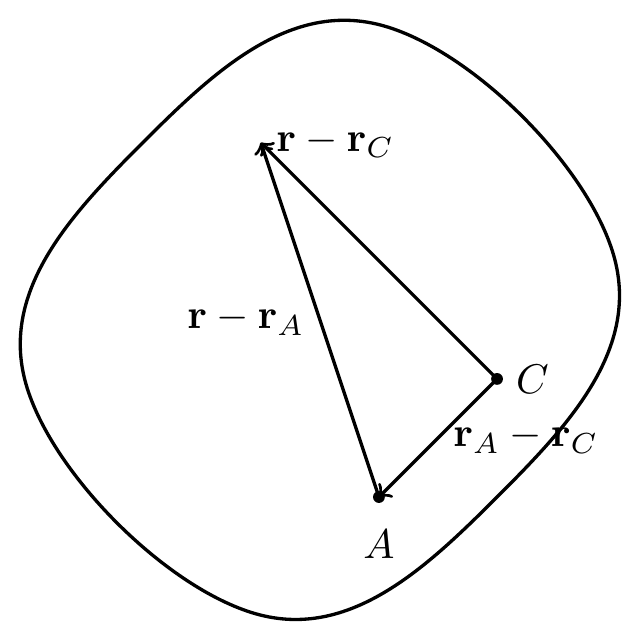
Recall that \[\begin{align} I_{xx} = \int_{\mathcal{B}}(x^2+y^2)\,dm, \qquad I_{xy} = -\int_{\mathcal{B}}xy\,dm, \qquad {\bf r}-{\bf r}_C = x{\bf e}_x+y{\bf e}_y+z{\bf e}_z, \end{align}\] and let \({\bf r}_A-{\bf r}_C = A_x{\bf e}_x+A_y{\bf e}_y+A_z{\bf e}_z\). Then, \[\begin{align} I_{xx}^A &= \int_{\mathcal{B}}\leb(y-A_y)^2+(z-A_z)^2\reb\,dm\\ &= I^C_{xx}+(A_y^2+A_z^2)\int_{\mathcal{B}}dm-2A_y\int_{\mathcal{B}}y\,dm-2A_z\int_{\mathcal{B}}z\,dm. \end{align}\] Because \(\int_{\mathcal{B}}({\bf r}-{\bf r}_C)\,dm={\bf 0}\), we have \(\int_{\mathcal{B}}y\,dm=0\) and \(\int_{\mathcal{B}}z\,dm=0\), so \[\begin{align} I_{xx}^A = I^C_{xx}+m(A_y^2+A_z^2). \end{align}\] The moment of inertia always increases when we move away from the center of mass. Similarly, \[\begin{align} I_{xy}^A = -\int_{\mathcal{B}}(x-A_x)(y-A_y)\,dm = I^C_{xy}-mA_xA_y. \end{align}\]
19.14.1 Deriving the Parallel Axis Theorem Using Tensors
Analogous to \[\begin{align} {\bf I}^C = \int_{\mathcal{B}}\lp({\bf r}-{\bf r}_C)\cdot({\bf r}-{\bf r}_C)\,{\bf I}-({\bf r}-{\bf r}_C)\otimes({\bf r}-{\bf r}_C)\rp dm, \end{align}\] let the inertia tensor of the rigid body \(\mathcal{B}\) about any material point \(P\) be \[\begin{align} {\bf I}^P = \int_{\mathcal{B}}\lp({\bf r}-{\bf r}_P)\cdot({\bf r}-{\bf r}_P)\,{\bf I}-({\bf r}-{\bf r}_P)\otimes({\bf r}-{\bf r}_P)\rp dm. \end{align}\] To write \({\bf I}^P\) in terms of \({\bf I}^C\), introduce \({\bf r}_C-{\bf r}_C\): \[\begin{align} {\bf I}^P &= \int_{\mathcal{B}}\lp({\bf r}+{\bf r}_C-{\bf r}_C-{\bf r}_P)\cdot({\bf r}+{\bf r}_C-{\bf r}_C-{\bf r}_P)\,{\bf I}-({\bf r}+{\bf r}_C-{\bf r}_C-{\bf r}_P)\otimes({\bf r}+{\bf r}_C-{\bf r}_C-{\bf r}_P)\rp dm\\ &= \hdots\\ &= \lnorm{\bf r}_P-{\bf r}_C\rnorm^2{\bf I}-m({\bf r}_P-{\bf r}_C)\otimes({\bf r}_P-{\bf r}_C). \end{align}\]
A second derivation starts from the relationship between the angular momentum of the body about \(P\) and about \(C\), \[\begin{align} {\bf H}^P = {\bf H}^C+({\bf r}_C-{\bf r}_P)\times{\bf G}. \end{align}\] Since \(C\) and \(P\) are both material points on the rigid body, their velocities are related by \[\begin{align} {\bf v}_C = {\bf v}_P+\bomega\times({\bf r}_C-{\bf r}_P). \end{align}\] Substituting this into the angular momentum relationship, \[\begin{align} {\bf H}^P &= {\bf H}^C+({\bf r}_C-{\bf r}_P)\times\lp{\bf v}_P+\bomega\times({\bf r}_C-{\bf r}_P)\rp\\ &= {\bf H}^C+({\bf r}_C-{\bf r}_P)\times{\bf v}_P+({\bf r}_C-{\bf r}_P)\times\lp\bomega\times({\bf r}_C-{\bf r}_P)\rp. \end{align}\] Using the BAC-CAB identity, \({\bf a}\times({\bf b}\times{\bf c})={\bf b}({\bf a}\cdot{\bf c})-{\bf c}({\bf a}\cdot{\bf b})\), the last term simplifies: \[\begin{align} ({\bf r}_C-{\bf r}_P)\times\lp\bomega\times({\bf r}_C-{\bf r}_P)\rp &= \bomega\lp({\bf r}_C-{\bf r}_P)\cdot({\bf r}_C-{\bf r}_P)\rp-({\bf r}_C-{\bf r}_P)\lp({\bf r}_C-{\bf r}_P)\cdot\bomega\rp\\ &= \lp\lnorm{\bf r}_C-{\bf r}_P\rnorm^2{\bf I}-({\bf r}_C-{\bf r}_P)\otimes({\bf r}_C-{\bf r}_P)\rp\bomega\\ &= \lp\lnorm{\bf r}_P-{\bf r}_C\rnorm^2{\bf I}-({\bf r}_P-{\bf r}_C)\otimes({\bf r}_P-{\bf r}_C)\rp\bomega. \end{align}\] Thus, defining \[\begin{align} {\bf I}^P \equiv {\bf I}^C+m\lnorm{\bf r}_P-{\bf r}_C\rnorm^2{\bf I}-m({\bf r}_P-{\bf r}_C)\otimes({\bf r}_P-{\bf r}_C), \end{align}\] we obtain \[\begin{align} {\bf H}^P = {\bf I}^P\bomega+({\bf r}_C-{\bf r}_P)\times m{\bf v}_P. \end{align}\] In component form, taking the corotational axes at \(P\) and \(C\) to be parallel with \({\bf r}_P-{\bf r}_C = A_x{\bf e}_x+A_y{\bf e}_y+A_z{\bf e}_z\), \[\begin{align} [{\bf I}^P] = \begin{bmatrix}I^C_{xx}&I^C_{xy}&I^C_{xz}\\I^C_{xy}&I^C_{yy}&I^C_{yz}\\I^C_{xz}&I^C_{yz}&I^C_{zz}\end{bmatrix} +m\begin{bmatrix}A_x^2+A_y^2+A_z^2&0&0\\0&A_x^2+A_y^2+A_z^2&0\\0&0&A_x^2+A_y^2+A_z^2\end{bmatrix} -m\begin{bmatrix}A_x^2&A_xA_y&A_xA_z\\A_xA_y&A_y^2&A_yA_z\\A_xA_z&A_yA_z&A_z^2\end{bmatrix}, \end{align}\] recovering the results above.
Combining both derivations, the parallel axis theorem in tensor form is: \[\begin{align} {\bf I}^A = {\bf I}^C+m\lnorm{\bf r}_A-{\bf r}_C\rnorm^2{\bf I}-m({\bf r}_A-{\bf r}_C)\otimes({\bf r}_A-{\bf r}_C). \end{align}\]
ImportantNote!
The parallel axis theorem applies only between the center of mass \(C\) and another material point — not between any two arbitrary material points. The moment of inertia always increases when moving away from \(C\).
19.15 Radius of Gyration
The radius of gyration \(k_z\) about the \(z\)-axis satisfies \(mk_z^2 = I_{zz}\). Similarly, \(k_x\) and \(k_y\) are defined by \(mk_x^2 = I_{xx}\) and \(mk_y^2=I_{yy}\).
19.16 Angular Momentum About a Moving Point \(P\)
For a material point \(P\) on the rigid body: \[\begin{align} {\bf H}^P &= \int_{\mathcal{B}}({\bf r}-{\bf r}_P)\times{\bf v}\,dm\\ &= \int_{\mathcal{B}}({\bf r}-{\bf r}_P)\times[{\bf v}_P+\bomega\times({\bf r}-{\bf r}_P)]\,dm\\ &= \int_{\mathcal{B}}({\bf r}-{\bf r}_P)\times[\bomega\times({\bf r}-{\bf r}_P)]\,dm+\int_{\mathcal{B}}({\bf r}-{\bf r}_P)\times{\bf v}_P\,dm\\ &= {\bf I}^P\bomega+({\bf r}_C-{\bf r}_P)\times m{\bf v}_P. \end{align}\] This definition of \({\bf I}^P\) agrees with the one derived above. If \(P\) is chosen to be the center of mass \(C\), \[\begin{align} {\bf H}^C = {\bf I}^C\bomega+({\bf r}_C-{\bf r}_C)\times m{\bf v}_P = {\bf I}^C\bomega. \end{align}\] If \(P\) is chosen to be a fixed point \(O\) (\({\bf v}_O={\bf 0}\)), \[\begin{align} {\bf H}^O = {\bf I}^O\bomega+({\bf r}_O-{\bf r}_C)\times m{\bf v}_O = {\bf I}^O\bomega. \end{align}\] In general: \[\begin{align} \dot{\bf H}^P = {\bf I}^P\overset{\circ}{\bomega}+\bomega\times({\bf I}^P\bomega)+\frac{d}{dt}\leb({\bf r}_C-{\bf r}_P)\times m{\bf v}_P\reb. \end{align}\]
ImportantNote!
As the body moves, the components of \({\bf I}^O\), \({\bf I}^C\), and \({\bf I}^P\) expressed on a corotational basis remain constant.
19.17 Summary
Corotational basis \(\{\mathbf{e}_x,\mathbf{e}_y,\mathbf{E}_z\}\) fixed to the rigid body: \[\begin{align} \dot{\mathbf{e}}_x = \boldsymbol{\omega}\times\mathbf{e}_x, \qquad \dot{\mathbf{e}}_y = \boldsymbol{\omega}\times\mathbf{e}_y, \qquad \boldsymbol{\omega}=\dot\theta\,\mathbf{E}_z. \end{align}\]
Velocity/acceleration of two points \(A\), \(B\) on a rigid body: \[\begin{align} \mathbf{v}_B - \mathbf{v}_A &= \boldsymbol{\omega}\times(\mathbf{r}_B-\mathbf{r}_A), \\ \mathbf{a}_B - \mathbf{a}_A &= \boldsymbol{\alpha}\times(\mathbf{r}_B-\mathbf{r}_A)+\boldsymbol{\omega}\times(\mathbf{v}_B-\mathbf{v}_A). \end{align}\]
Instantaneous center (IC): the point on a body (or its extension) with instantaneous zero velocity. Lies at the intersection of perpendiculars to the velocity vectors of two points.
Particle in a non-inertial frame (point \(A\) fixed to body, \(B\) moving relative to body): \[\begin{align} \mathbf{v}_B - \mathbf{v}_A &= \boldsymbol{\omega}\times(\mathbf{r}_B-\mathbf{r}_A)+\mathbf{v}_{\mathrm{rel}}, \\ \mathbf{a}_B - \mathbf{a}_A &= \boldsymbol{\alpha}\times(\mathbf{r}_B-\mathbf{r}_A)+\boldsymbol{\omega}\times(\boldsymbol{\omega}\times(\mathbf{r}_B-\mathbf{r}_A))+2\boldsymbol{\omega}\times\mathbf{v}_{\mathrm{rel}}+\mathbf{a}_{\mathrm{rel}}. \end{align}\] The Coriolis acceleration is \(2\boldsymbol{\omega}\times\mathbf{v}_{\mathrm{rel}}\).
Angular momentum and inertia tensor: \[\begin{align} H^C_z = I^C_{zz}\,\omega, \qquad I^C_{zz} = \int_{\mathcal{B}}(x^2+y^2)\,dm. \end{align}\]
Parallel axis theorem: \(I^A_{zz} = I^C_{zz} + m d^2\) where \(d\) is the distance from \(C\) to \(A\).
19.18 Exercises
19.18.1 Set 15 – Rigid Body Kinematics
1. [MKB 05-010] (ans. \(\mathbf{v}_B=-11\mathbf{E}_x\) m/s, \(\mathbf{a}_B=22\mathbf{E}_x-220\mathbf{E}_y\) m/s\(^2\))
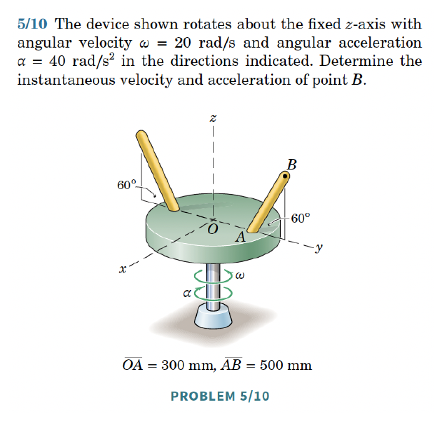
2. [MKB 05-013] (ans. \(\mathbf{v}_A=1.121\mathbf{E}_x+0.838\mathbf{E}_y\) m/s, \(\mathbf{a}_B=-4.48\mathbf{E}_x+0.1465\mathbf{E}_y\) m/s\(^2\))
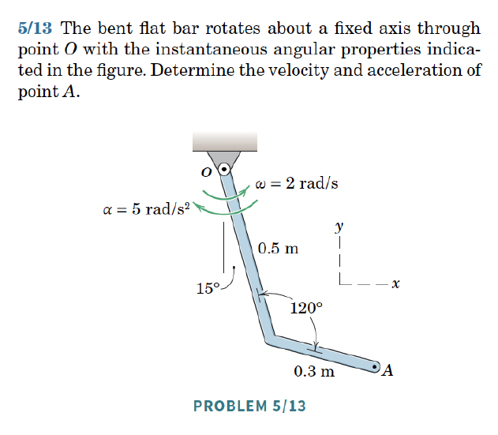
3. [05-018] (ans. \(\mathbf{v}_A=-0.374\mathbf{E}_x+0.1905\mathbf{E}_y\) m/s, \(\mathbf{a}_A=-0.757\mathbf{E}_x-0.605\mathbf{E}_y\) m/s\(^2\))
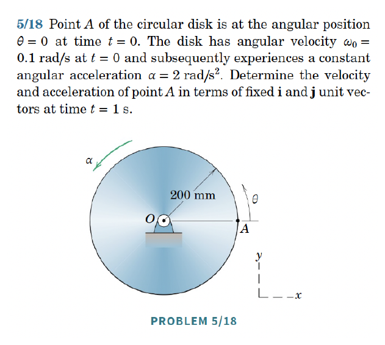
4. [05-049] (ans. (a) \(N=91.7\) rev/min CCW; (b) \(N=45.8\) rev/min CCW; (c) \(N=45.8\) rev/min CW)
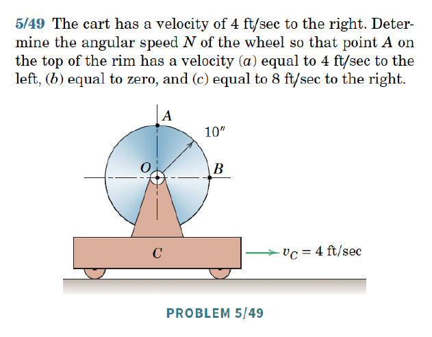
5. [05-065] (ans. \(\omega=0.722\) rad/s)
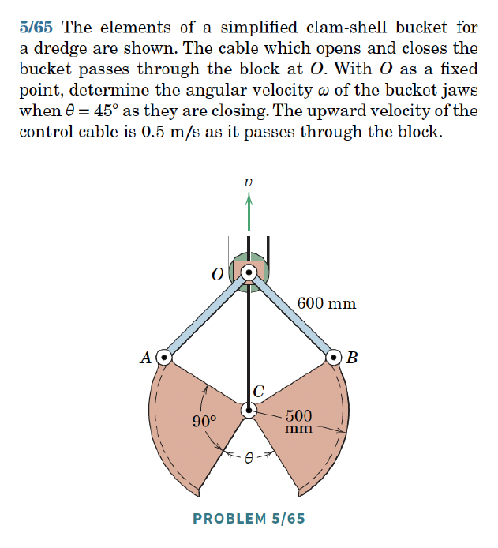
6. [05-069] (ans. \(\omega_{AB}=1.725\) rad/s CCW, \(\omega_{BC}=4\) rad/s CCW)
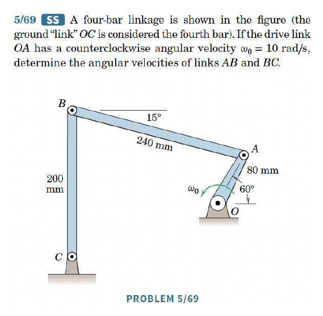
19.18.2 Set 16 – IC and Particle in Non-inertial Frame
1. [MKB 05-102] (ans. \(\alpha=0.286\) rad/s\(^2\), \(a_A=0.653\) m/s\(^2\) down)
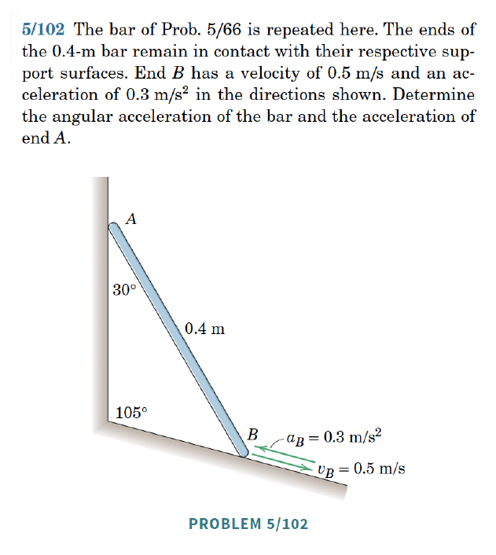
2. [MKB 05-125] (ans. \(\mathbf{v}_A=0.1\mathbf{E}_x+0.25\mathbf{E}_y\) m/s, \(\beta=68.2^\circ\))
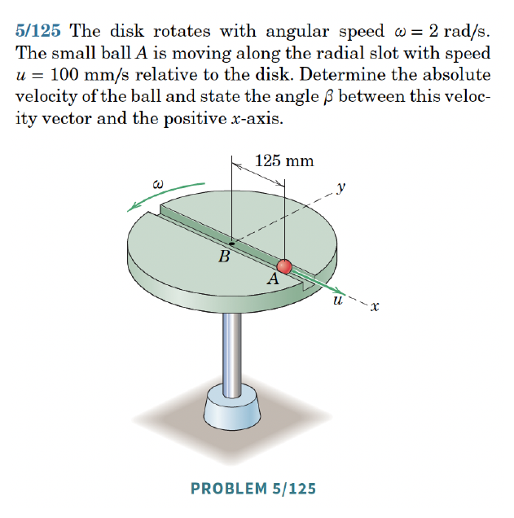
3. [05-143] (ans. \(v_{\mathrm{rel}}=3.93\) m/s, \(a_{\mathrm{rel}}=15.22\) m/s\(^2\), \(\omega_{BC}=1.046\) rad/s CW, \(\alpha_{BC}=117.7\) rad/s\(^2\) CW)
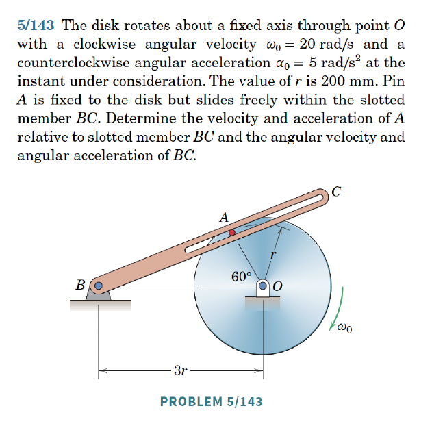
19.18.3 Set 17 – Rolling and Sliding
1. [MKB 05-055] (ans. \(v_O=6.93\) m/s, \(\omega=21.3\) rad/s CW)
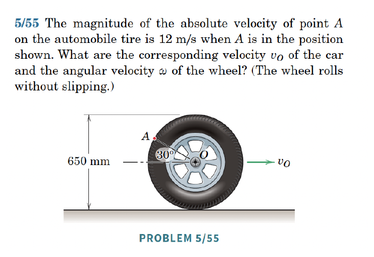
2. [MKB 05-087] (ans. \(v_O=120\) mm/s, \(v_P=216\) mm/s)
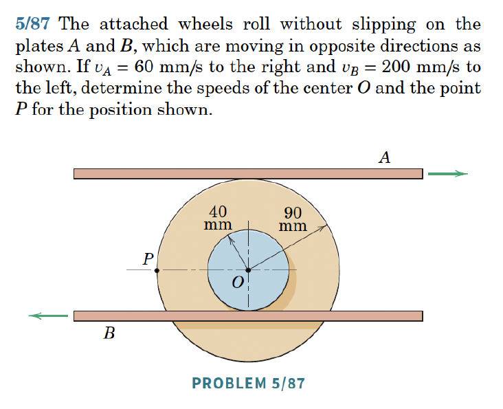
3. [05-091] (ans. \(v=15.71\) ft/s right, \(v_s=6.89\) ft/s left)
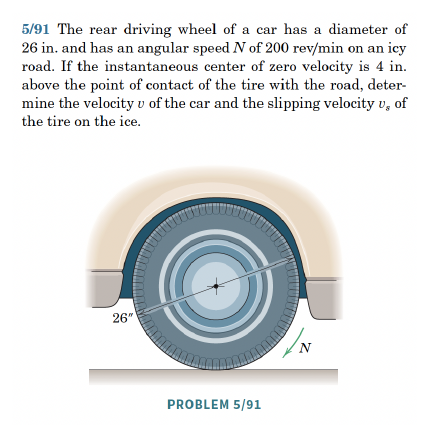
4. [05-093] (ans. \(v_A=9.19\) ft/sec left)
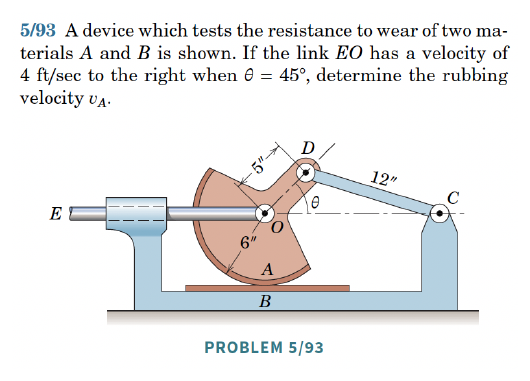
5. [05-100] (ans. \(\mathbf{v}_A=5.12\mathbf{E}_x+2.12\mathbf{E}_y\) m/s, \(\mathbf{a}_B=-16.25\mathbf{E}_x+2.5\mathbf{E}_y\) m/s\(^2\))
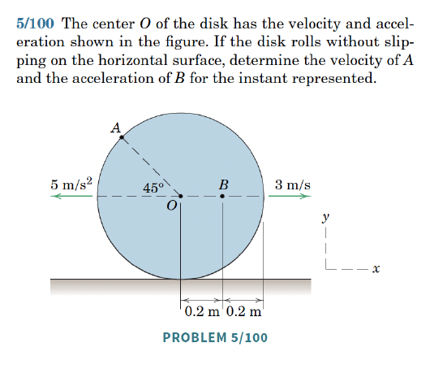
19.18.4 Set 18 – Moments of Inertia
1. [MKB B-004] Integration required. (ans. \(I_{xx}=\frac{3}{10}mr^2\), \(I_{yy}=\frac{2}{5}m(r^4+h^2)/(r^2)\))
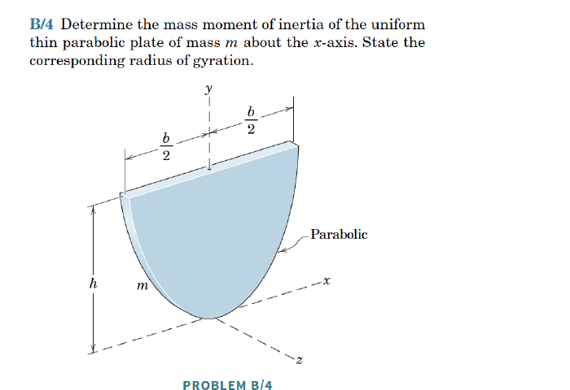
2. [MKB B-029] Treat the hollow cylinder as a full cylinder of radius \(r_2\) minus a cylinder of radius \(r_1\). (ans. \(I_{xx}=\frac{1}{2}m(r_1^2+r_2^2)\))
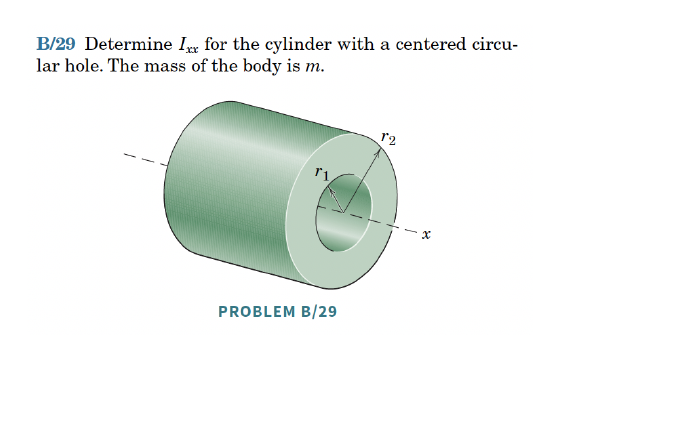
3. [B-032] (ans. \(L=r\sqrt{2\sqrt{3}}\))
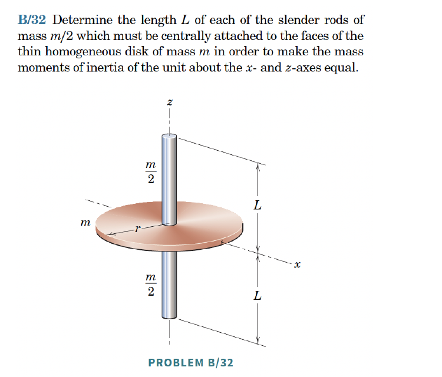
4. [B-034] (ans. \(I_{yy}=\rho L^3\left(\frac{43}{192}+\frac{83\pi}{128}\right)\))
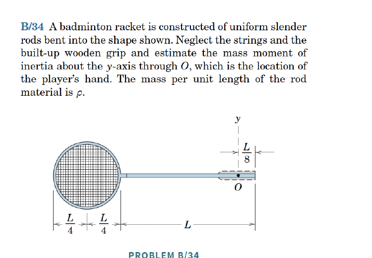